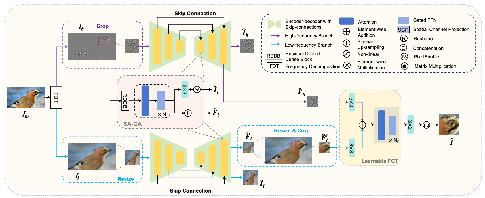
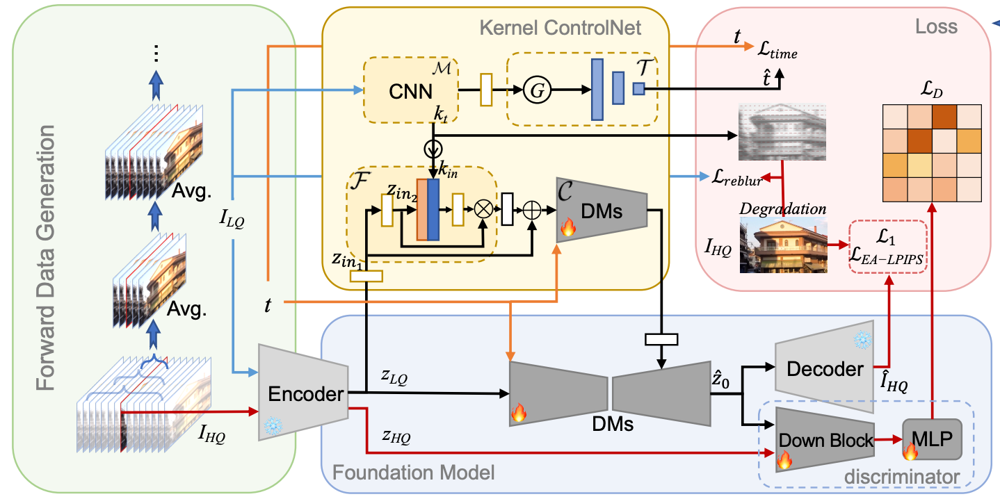
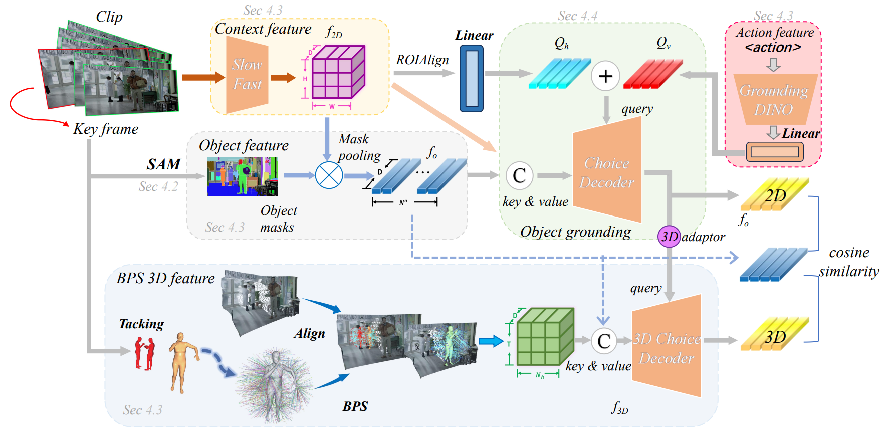

Welcome to my homepage! I am Xiaoyang Liu (刘潇阳), a second-year M.S. student in Computer Science at Shanghai Jiao Tong University. Currently, I am collaborating closely with Prof. Yulun Zhang in his research group. My research areas include Image Restoration, Generative Models, and Model Compression. Recently, my research has shifted toward post-training and alignment of multimodal foundation models for visual understanding and generation, including post-training for VLMs/LLMs and AIGC models. I am actively seeking internship and collaboration opportunities in these directions. Please feel free to contact me.
🔥 News
- [2026-06-19] 🎉 The Freqformer paper was accepted to ECCV 2026.
- [2026-01-26] 🎉 The FideDiff paper was accepted to ICLR 2026.
- [2025-10-09] 🏅 Awarded the 2025 National Scholarship.
- [2025-08-28] 👨🏫 Appointed as the class director for the 2025 Zhiyuan Engineering Honors Program at Zhiyuan College.
- [2025-06-20] 🏅 Awarded the Outstanding Bachelor’s Thesis of SJTU, Ye Jun & Shen Nanpeng Zhiyuan Outstanding Scholarship.
- [2024-12-10] 🎉 My first paper was accepted to AAAI 2025.
- [2024-08-26] 🔬 Joined Prof. Yulun Zhang’s group.
- [2022-11-22] 🔬 Joined MVIG Lab, RHOS Group, co-supervised by Prof. Cewu Lu and Prof. Yong-Lu Li.
📝 Publications
* denotes Equal Contribution, $\dagger$ denotes Corresponding Author.

Freqformer: Image-Demoiréing Transformer via Effective Frequency Decomposition
Xiaoyang Liu*, Bolin Qiu*, Zheng Chen, Libo Zhu, Zihan Zhou, Kai Liu, Jiezhang Cao, Yulun Zhang$\dagger$

FideDiff: Efficient Diffusion Model for High-Fidelity Image Motion Deblurring
Xiaoyang Liu*, Zhengyan Zhou*, Zihang Xu, Jiezhang Cao, Zheng Chen, Yulun Zhang$\dagger$
In ICLR 2026 | Paper | Code | OpenReview

Interacted Object Grounding in Spatio-Temporal Human-Object Interactions
Xiaoyang Liu*, Boran Wen*, Xinpeng Liu*, Zizheng Zhou, Hongwei Fan, Cewu Lu, Lizhuang Ma, Yulong Chen$\dagger$, Yong-Lu Li$\dagger$
In AAAI 2025 | Paper | Code | Huggingface
NTIRE Workshop
-
“The Fourth Challenge on Image Super-Resolution ($\times$4) at NTIRE 2026: Benchmark Results and Method Overview”. Zheng Chen et al. In CVPR 2026 Workshops (NTIRE). [Paper]
-
“The First Challenge on Mobile Real-World Image Super-Resolution at NTIRE 2026: Benchmark Results and Method Overview”. Jiatong Li et al. In CVPR 2026 Workshops (NTIRE). [Paper]
-
“The First Challenge on Remote Sensing Infrared Image Super-Resolution at NTIRE 2026: Benchmark Results and Method Overview”. Kai Liu et al. In CVPR 2026 Workshops (NTIRE). [Paper]
Image Restoration
-
“One-Step Diffusion Model for Image Motion-Deblurring”. Xiaoyang Liu, Yuquan Wang, Zheng Chen, Jiezhang Cao, He Zhang, Yulun Zhang$\dagger$, Xiaokang Yang. arXiv preprint arXiv:2503.06537. [Paper] [Project]
-
“PRISM: Prior Rectification and Uncertainty-Aware Structure Modeling for Diffusion-Based Text Image Super-Resolution”. Zihang Xu*, Xiaoyang Liu*, Zheng Chen, Yulun Zhang$\dagger$, Xiaokang Yang. arXiv preprint arXiv:2605.13027. [Paper] [Project]
-
“RIFLE: Removal of Image Flicker-Banding via Latent Diffusion Enhancement”. Libo Zhu*, Zihan Zhou*, Xiaoyang Liu, Weihang Zhang, Keyu Shi, Yifan Fu, Yulun Zhang$\dagger$. arXiv preprint arXiv:2509.24644. [Paper] [Project]
Model Compression
-
“QuantDemoire: Quantization with Outlier Aware for Image Demoiréing”. Zheng Chen*, Kewei Zhang*, Xiaoyang Liu, Weihang Zhang, Mengfan Wang, Yifan Fu, Yulun Zhang$\dagger$. arXiv preprint arXiv:2510.04066. [Paper] [Project]
-
“BinaryDemoire: Moiré-Aware Binarization for Image Demoiréing”. Zheng Chen*, Zhi Yang*, Xiaoyang Liu, Weihang Zhang, Mengfan Wang, Yifan Fu, Linghe Kong, Yulun Zhang$\dagger$. arXiv preprint arXiv:2602.03176. [Paper] [Project]
Human-Object Interaction
- “DJ-RN++: Detecting and Recovering Human-Object Interactions from Still Images”. Yong-Lu Li*, Xinpeng Liu*, Boran Wen, Xiaoyang Liu, Cewu Lu$\dagger$. Under Review.
🎖 Honors and Awards
- National Scholarship (Top 1%, Graduate Level), 2025
- First-Class Academic Scholarship for 2025 Master’s Students, SJTU, 2025
- Ye Jun & Shen Nanpeng Zhiyuan Outstanding Scholarship (Top 1%), SJTU, 2025
- Outstanding Graduate of SJTU, 2025
- Outstanding Bachelor Thesis (Top 1%), SJTU, 2025
- Liu Yongling Scholarship (Top 5%), SJTU, 2024
- Huawei Scholarship (Top 5%), SJTU, 2023
- Zhiyuan Honors Scholarship (Top 5%), SJTU, 2021, 2022, 2023, 2024
- Merit Scholarship (Top 10%), SJTU, 2022, 2023, 2024
- Merit Student (Top 5%), SJTU, 2022
- First Prize, “Internet + Rural Revitalization” Social Practice, SJTU, 2022
📖 Education
- 2025.09 - 2028.03 (expected), M.S. in Computer Science, Shanghai Jiao Tong University.
- 2021.09 - 2025.06, B.S. in Computer Science and Zhiyuan Honors Degree, Shanghai Jiao Tong University.
- Ranked 11/103, with A+ in 21 courses and A in 30 courses out of 67 courses.
- Zhiyuan Honors Degree is an elite program for top 5% talented students.
💻 Internships
Huawei, AI Algorithm Intern, 2026.07 - 2026.09.
- Trained VLM understanding and editing-instruction generation modules; performed multimodal SFT on Qwen3.6-35B with LLaMA-Factory, covering multi-source image-text data integration, LoRA fine-tuning, distributed training, and offline inference evaluation.
- Customized the GRPO training and reward pipeline with verl: sampled multiple editing instructions per image in parallel, generated candidate results with an image-to-image model, and optimized the policy using result-level scores fused from pose and composition reward models to align editing instructions with final image quality.
- Built asynchronous resource orchestration across VLMs, image-editing models, and reward models with Ray, aiohttp, vLLM, and FSDP2; developed an end-to-end optimization pipeline for content hallucination, abnormal human poses, and composition imbalance.

StepFun, Foundation Model Intern (Incoming), 2026.09 expected.
- Signed offer for a foundation model internship; expected to join in September 2026.
💼 Collaborative Projects
Related technical outcomes have been deployed on Huawei Pura 90 series smartphones.
🤝 Service
- Academic Service
- Reviewer: PRCV 2025, ICCV 2025, NeurIPS 2025, CVPR 2026, ECCV 2026, ACM MM 2026, ICLR 2027
- Volunteer, 1st China Embodied Intelligence Conference, 2024.03
- Student Leadership
- Class Director, 2025 Cohort Zhiyuan Engineering Honors Program, Zhiyuan College, SJTU, 2025.08 - Present
- Publicity Officer, CS25M031 Class, SJTU, 2025.09 - Present
- Vice Monitor, F2103302 Class, SJTU, 2021.11 - 2025.06
- Student Union Officer, SEIEE, SJTU, 2022.03 - 2023.03
- Community Service
- Volunteer, Shanghai International Marathon, 2022, 2023
- Volunteer, Shanghai West Bund Art Museum, 2024